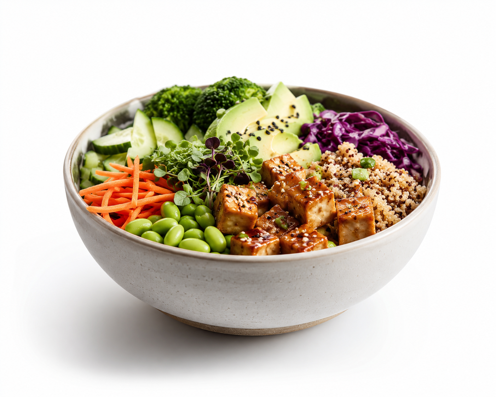

Step 01 · photo scan
A photo only sees the surface.
Camera vision starts the log fast, but it cannot know what is buried, mixed in, off-frame, or customized.

A photo catches the surface. Voice adds the hidden layers, prep details, and portions that make the nutrition read real.
VoCal can
The video shows the spread of ingredients. VoCal combines what the camera sees with what you say is hidden, mixed in, or customized.
VoCal result
742
kcal
38g
protein
+22g
vs photo
Why VoCal
Talk like a normal person. VoCal turns messy voice notes into structured food, portions, modifiers, and confidence signals.
Voice note
"Half a Cava bowl, extra chicken, dressing on the side."
Name the place or dish and VoCal can search restaurant foods, compare likely menu items, and anchor the estimate to a real meal.
Best match
Chicken burrito bowl
Meals, recovery, sleep, and training context become one next step instead of another dashboard to interpret.
Add 25-35g protein at breakfast and hydrate before your afternoon session.
Weight, protein consistency, calories, and check-ins sit together so the user sees trend, not just today's log.
Weight trend
181.4 -> 178.9
Progress photos can estimate body-fat direction over time, while the interface keeps it framed as guidance, not a diagnosis.
Estimate range
17-19%
trend confidence rising
Apple Watch, Whoop, Apple Health, and other fitness trackers help VoCal adjust coaching to recovery and output.
Three seconds
The photo gives VoCal a starting point. Your voice fills in what the lens cannot know, then the app turns both into a cleaner nutrition record.
VoCal identifies what is visible on the surface: rice, greens, sauce, drink, package, or restaurant dish.
Say what is underneath, mixed in, customized, or from a restaurant so the estimate is not limited to the photo.
A clean card appears with ingredients, macros, confidence, and progress impact. Tap once or correct by voice.
I've abandoned every food tracker in a week. VoCal is the first one that lets me log real meals without babysitting the app.
Dr. Renée Aoki
Sports dietitian · Lisbon
Pricing
VoCal Pro
Most loved$6/mo
Unlimited history, nutrition coach, progress imaging, wrist app, full export.
Go ProQuestions
A photo can only see the surface. VoCal uses voice to add hidden ingredients, restaurant details, cooking methods, and rough portions, then reconciles that context with the image.
Yes. Capture works fully offline and syncs when you reconnect. The Apple Watch flow is voice-first, so you can add context mid-walk without your phone.
Audio is transcribed on-device and discarded immediately — only the structured meal is stored. Nothing is sold or used for advertising.
Pro exports clean CSV and PDF, and Clinic plans add a shared practitioner dashboard with read-only client access.
Free on iOS and Android. Snap the meal, say what the camera missed, and keep your progress moving.